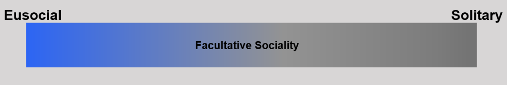
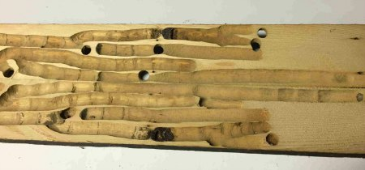
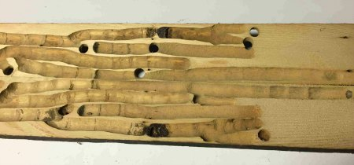
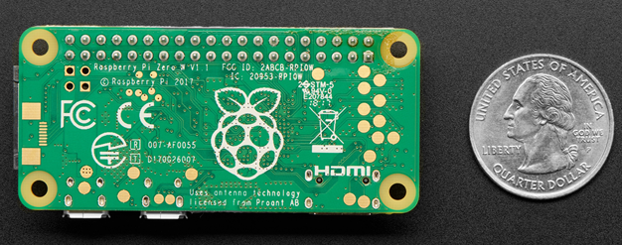
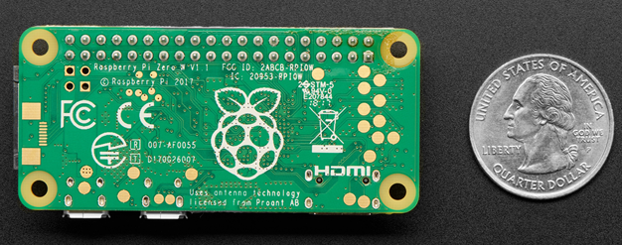

Shawn Small's Thesis Research
Open Science Instrumentation and Data Collection Thesis Seminar
Hello, my name is Shawn Small. I am an undergraduate student at the University of Massachusetts, Amherst (UMass Amherst). I am pursuing degrees in psychology (B.S.) and biology (B.S.), and I am a member of both the Commonwealth Honors College and the Integrated Concentration in Sciences (iCons) Program at UMass Amherst.
For my undergraduate honors thesis, I am studying the vibroacoustic behavior and the daily frequencies of performed behaviors in the eastern carpenter bee, Xylocopa virginica. This work is supported by the Open Science Instrumentation and Data Collection honors thesis seminar. I intend to inform the X. virginica ethogram by contributing behavioral performance frequencies to the ethogram. I also hope to demonstrate the usefulness of open source software in behavioral research, which provides equivalent functionality and applicability to that possessed by expensive, mass-produced equipment.
If you have any questions or comments about my thesis research, please feel free to contact me.
Xylocopa virginica
The Eastern Carpenter Bee
Many insect taxa produce communicatory vibrations and sounds Hunt & Richard, 2013). One such vibroacoustic taxon are Xylocopa species (Hymenoptera: Apidae). Xylocopa species occur throughout the world (Hurd & Moure, 1963). Amongst Xylocopa species, there is a spectrum of social behaviors. Xylocopa species demonstrate facultative sociality, a plastic behavioral phenotype (Shell & Rehan, 2018), where individual bees may nest in solitary or shared galleries. Facultatively social nesting is a plastic, phenotypic behavioral spectrum; these behaviors do not fall into categories. An individual female bee may, for example, nest in solitary for one breeding season and may nest in a shared gallery in the subsequent breeding season. Facultative sociality therefore differs from solitary and eusocial categories of nesting behavior, where solitary behaviors and eusocial behaviors represent opposing extremes of the facultatively social behavior spectrum. Whether a bee chooses to construct a solitary gallery or chooses to live in a shared gallery depends on environmental factors.
Native to eastern North America, the eastern carpenter bee, Xylocopa virginica, is one such facultatively social species. Female eastern carpenter bees drill into exposed wood and construct a gallery nest early in the spring. X. virginica is a univoltine species, producing a single brood of offspring in the gallery annually (Prager, 2008). Gerling and Hermann (1978) recorded females rearing 8-9 bees per nest in a single season. Egg-laying female conspecifics may construct solitary nesting galleries or, if they are closer to eusociality on the facultatively social spectrum, construct individual nests within a gallery. Within the gallery, X. virginica is a mass provisioning species, where the female creates pollen masses, upon which eggs are laid (Prager, 2008). The female X. virginica then uses wood shavings to seal its egg and pollen mass inside of its own cell in the gallery. The female will repeat this behavior until there are several egg and pollen mass containing cells adjacent to each other in the gallery. A larva consumes its pollen mass as an energy source.
In non-solitary nesting galleries, some females are helpers, and generally do not lay eggs. Helper females increase the fitness of egg-laying females by assisting with the brood. Helper females may gain a fitness benefit in their second breeding season because they will often inherit the nesting gallery and reproduce, after the prior reproducing females have died (Prager, 2008).
X. virginica males demonstrate distinct behavior from X. virginica females. Males and females emerge from overwintering at different times of the year, and females outnumber males (Prager, 2008). Males demonstrate territoriality, where larger, more aggressive males generally spend the majority of their time hovering near a gallery entrance, while smaller, less aggressive males spend the majority of their time around the periphery of the gallery or farther away (Barthell & Baird, 2004; Prager, 2008). When territory holding males fly away from a gallery entrance, smaller less aggressive males will assume a hovering position outside of the gallery entrance. Once the territory holding male returns, it will recapture control of its territory and expel the other males back to the periphery of the gallery or farther away (Prager, 2008). Territorial males have been shown to pursue intruders if the intruders are actively flying but they will not pursue motionless intruders (Gerling & Hermann, 1978). Males engage in polygyny, a mating system in which a male will mate with several females during a single breeding season. The majority of intrasexual interactions occur around the gallery entrance, where the largest, most aggressive males’ mate disproportionately more frequently than smaller, less aggressive males (Barthell & Baird, 2004).
Only Prager (2008) has produced a detailed ethological record of both male and female X. virginica behaviors. However, the daily frequency of performance for each X. virginica behavior remains unknown. The vibroacoustic behavior of this species has also not been extensively studied to date. Here, the vibroacoustic behavior and activity patterns of X. virginica will be monitored at a nesting gallery to determine the frequencies of its performed behaviors. To conduct this research, a custom data collection instrument will be constructed.

 by bob in swamp is licensed with CC BY 2.jpg) 


Methodology
Methodology
Data Collection
In February and March 2021, X. virginica nesting galleries will be monitored both for vibroacoustic behavior and for daily activity patterns. Galleries will be located by searching for signs of eastern carpenter bee hole drilling activity on the UMass Amherst campus and the surrounding Amherst area.
After an active nesting gallery iss located, the data collection instrument will be deployed. A cinch strap will anchor the data collection instrument to an immobile object at the study site. The data collection instrument will be positioned diagonally below the gallery nest entrance, in an orientation where the camera module faces the gallery entrance, and where the solar panel is exposed to direct sunlight. The RCA cables used for connecting the transducers to the sound card are 2 m long, therefore, the orientation of the data collection instrument will not be limited by the transducers being attached to the wood surface outside of the gallery.
Sticky pads will secure the two transducers to the wood outside of the gallery entrance. All sounds produced within the gallery will be recorded by the transducers. The audio injector sound zero card receives the auditory data from the transducers and the Raspberry Pi will then save the audio recordings.
Automated interval sampling of every movement detected outside of the gallery entrance will be conducted with the day-night camera module. When movements are detected, the pre-captured video recording from five seconds prior to movement detection, plus the post-captured subsequent sixty seconds after movement are appended together into one video clip. The Raspberry Pi will then save each video clip.
After thirty days of instrument operation, data were examined for daily activity patterns and for vibroacoustic behavior.
Data Analyses
Daily activity patterns were identified by comparing the date and time stamps on each datum. A time of day is considered to be a species' typical activity period whenever similar behaviors are detected at approximately the same time across consecutive days during the data collection period.
The visual and vibroacoustic data together provided insight into the frequencies of behaviors performed at the gallery. To determine the frequency of performance for a given behavior, the cumulative performances of each recorded behavior will be counted. Behaviors are identified based on the findings of Prager (2008). In instances where an observed behavior could not be identified in the literature, the behavior will be considered to have not been previously observed in X. virginica. Observations of predator and parasite presence will be noted.
Sound source localization is approximated with the data collected from each transducer. Sound localization requires three dimensions: the azimuth, which is the horizontal plane angle from which the sound is received, the elevation, which indicates the vertical origins of the received sound, and the depth, which is the distance from which the sound originated (Risoud et al., 2018). Where the transducers will be placed on the exterior wood surface outside of the nesting gallery, the depth and the elevation are assumed to be zero. The sound producing bee’s location will be approximated for each vibroacoustic datum collected.


Data Collection Instrument
Instrument Construction
A custom data collection instrument will be constructed to conduct this research. (All hardware components required for assembly are listed below.) One finalized version of the data collection instrument will be deployed outside of an eastern carpenter bee gallery. If the deployed instrument is damaged, vandalized, or stolen, a second version of the instrument will be deployed in its place.
A Raspberry Pi Zero WH (referred to hereafter as Raspberry Pi) single board computer will manage data collection and data storage. The entire board itself measures 65 mm x 30 mm x 5 mm, which makes the Raspberry Pi convenient for implementation into larger electronic apparatuses.
The Raspberry Pi will operate both the video recording system and the auditory recording system. The Raspbian Lite operating system, plus all programming for instrument operation will be stored on a 1 TB microSD card that serves as the Raspberry Pi’s memory. To prevent overheating, one aluminum heat sink will be attached to the Raspberry Pi’s processor. Additional general purpose input / output (GPIO) pin extenders and break-away pin strips will be attached to increase the height of the Raspberry Pi’s GPIO pins, for ease of access.
The Raspberry Pi’s ability to store data is limited to available microSD card memory. Therefore, data will be stored both locally on the microSD card and remotely in a shared folder via a computer network. All data collected by the Raspberry Pi will be sent to the shared folder. Upon being sent to the shared folder, the data are saved in the other computer’s memory. Data will be transferred to the shared folder once per week.
For vibroacoustic data collection, an Audio Injector Sound Zero card will be connected to the Raspberry Pi. The sound card receives sound input from two transducers. The transducers will be attached to the sound card via interconnecting RCA adaptor cables. The RCA adaptor cables have a 0.25 inch male plug and an RCA male plug on either end. The sound card is stacked on top of the Raspberry Pi and connected via the GPIO pins.
For visual data collection, an Arducam Day-Night Vision camera module will be connected to the Raspberry Pi. The Arducam Day-Night Vision camera module has one camera that automatically switches to detecting infrared light during the night. The camera module is attached to the Raspberry Pi camera port with a camera cable. Once attached, the camera module will be positioned against the transparent lid of the instrument enclosure, to avoid video distortion while recording a gallery entrance. The camera records video continuously, but the recording is saved only when activity is detected outside of the gallery entrance.
The open source software “motion” will be used as the basis of the Raspberry Pi’s camera module programming. The “motion” software is available for download from GitHub . The camera will run on the “motion” pre-capture and post-capture codes. Live video is temporarily stored in a data buffer. If motion is detected via a change in the camera pixels, then the buffered video will become the beginning of a saved video clip. This pre-captured footage will be appended onto the footage recorded after motion is detected. The footage recorded after motion detection is the post-motion capture. Each combined pre-capture and post-capture video clip is then saved by the Raspberry Pi. Recording without saving then resumes, until movement is detected again.
A solar panel, a PiJuice HAT Portable Power uninterruptible power supply (UPS) and a 5,000 mAh battery will power the data collection instrument. The UPS regulates instrument electricity use. A 12 W solar panel supplies additional electricity to the system and recharges the battery. The battery is plugged directly into the UPS board and is mounted on top of the board itself. The solar panel will be mounted to the top of the data collection instrument enclosure, and connected directly to the UPS board via a cable that will run through the side of the instrument enclosure. The UPS board is attached to the Raspberry PI via the GPIO pins. A micro-USB power cord and the UPS will power the instrument during instances when it is running on a main power supply.
The assembled instrument will be housed inside of a NEMA 4X rated enclosure. This enclosure will protect the instrument from dust and water damage, which increases its field usability and longevity. The cover of the enclosure is transparent, to allow for video recording; the walls and base of the enclosure are opaque. The transducer cables will be run through the side of the enclosure, and plugged into the sound card.
In the coming months I will create an Instructable to cover instrument assembly and programming in greater detail.
Instrument Hardware:
- 2-piece Transducers
- Audio Injector Sound Zero Card
- Plastic Enclosure, NEMA 4X
- PiJuice HAT Portable Power Supply (UPS)
- PiJuice 5000mAh Battery
- Raspberry Pi Zero Wireless WH (Pre-Soldered Header)
- MicroSD Card - 1 TB - Class 10
- Official Raspberry Pi Zero Case + Mini Camera Cable
- Micro-USB Power Supply - 5.1V 2.5A, UL Listed
- Ethernet Hub and USB Hub w/ Micro USB OTG Connector
- Aluminum Heatsink
- PiJuice Solar Panel - 12 Watt
- Hosa CPR-202 Dual 1/4" TS to Dual RCA Stereo Interconnect Cable, 2 Meters
- ELEDIY 2 x 20 (40 Pin) Stacking Header for Raspberry Pi A+/B+/Pi 2/Pi 3 Extra Tall Header (Pack of 4)
- Break-away 0.1" 2x20-pin Strip Dual Male Header
- Arducam Day-Night Vision for Raspberry Pi Camera
- MakerSpot Raspberry Pi Nylon Standoff Kit M2.5 Screws Nuts Spacers Standoffs 210pcs for DIY Building of Raspberry Pi 3 Pi Zero FPV RC Quadcopter Drone PC Mods
- Female to Female Jumper Cable x 40 (20cm)
- Male to Female Jumper Cable x 40 (20cm)
- Male to Male Jumper Cable x 40 (20cm)
- Heavy Duty Cinch Straps with Stainless Steel Metal Buckle, Reusable Durable Hook and Loop, Multipurpose Securing Straps - 4 Pack - 1.5" x 60"
Please visit my Github page to view the Python program that operates the data collection instrument.
 - v1.3 by adafruit is licensed with CC BY-NC-SA 2.jpg) 


Contact
If you have any questions about my research, please feel free to contact me (smsmall@umass.edu) using the form below: